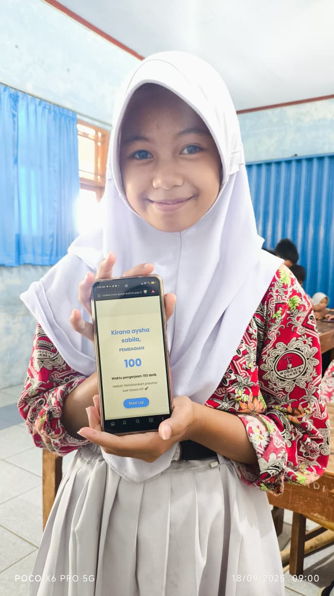

Selamat Datang di Website Resmi SDN Bulu!
Selamat datang di tahun ajaran baru! Kami berkomitmen untuk menyediakan lingkungan belajar yang aman, menyenangkan, dan inspiratif bagi seluruh siswa.
Baca SelengkapnyaKegiatan Pembelajaran Mendalam di Sekolah
Melalui kurikulum yang inovatif dan metode pengajaran yang interaktif, kami mendorong siswa untuk berpikir kritis, berkreasi, dan berkolaborasi.
Lihat Galeri